Домашнє завдання №2. Владислав Баглай (BaGy6754ua(Влад)#0954)
Коротко про роботу
У цій роботі я коротко представлю свою волонтерську діяльність. Фото були взяті як із початку моєї діяльності
ще у перші дні повномасштабної війни, так і впродовж усього часу. Заздалегіть вибачаюсь за російську мову на
деяких із фото, так як їх виставляли мої колеги, з якими я волонтерив та волонтерю досих пір.
Гуманітарна допомога для біженців у Польщі. Мій початок волонтерської діяльності
Поїхав був підтримати подругу, так як у неї був день народження 25 лютого, а ви самі знаєте що за день до цього
відбулося. Разом ми вирішили хоч якось підтримати наших біженців, та пішли закупити речей та їжі для наших
людей:
Розширення моєї волонтерської діяльності.
Коли я вернувся додому до Любліна, де я навчаюся та на разі живу, я побачив що мій друг, який теж тут навчався
всерйоз зайнявся волонтерством. Я вирішив йому та ще одній людині в команді допомогти. Так я до них приєднався
та ми разом почали шукати де можна закупити ті чи інші речі для військових, біженців.
Так після кількох тижнів ми вже вийшли на такі речі, як:
Шоломи;
Бронежилети;
Тепловізори;
Оптику;
Рації;
Воєнні рюкзаки та інше.
Нижче я виставлю деякі окремі фото гуманітарки, яку ми закупляли/закупляємо.
Шоломи:
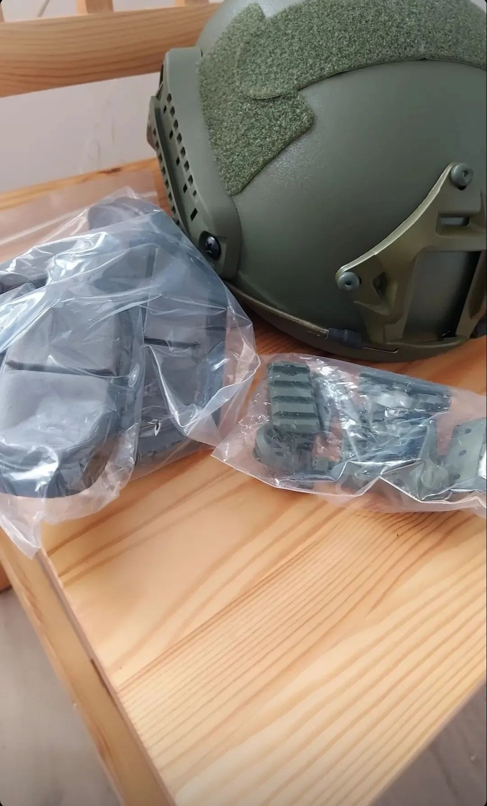
Тепловізори:
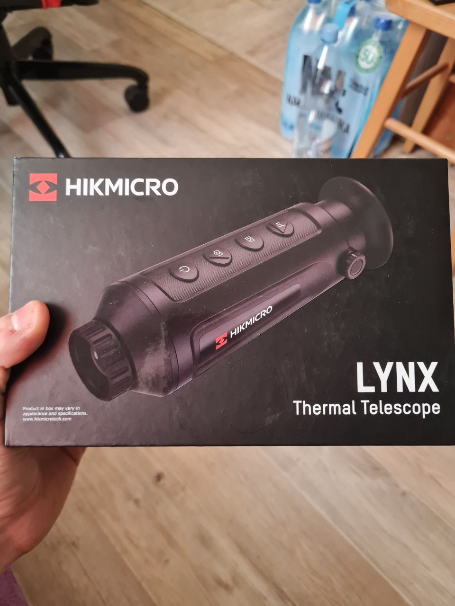
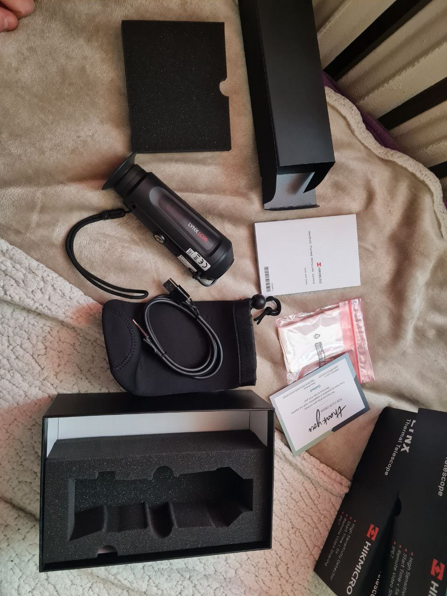
Воєнні рюкзаки:
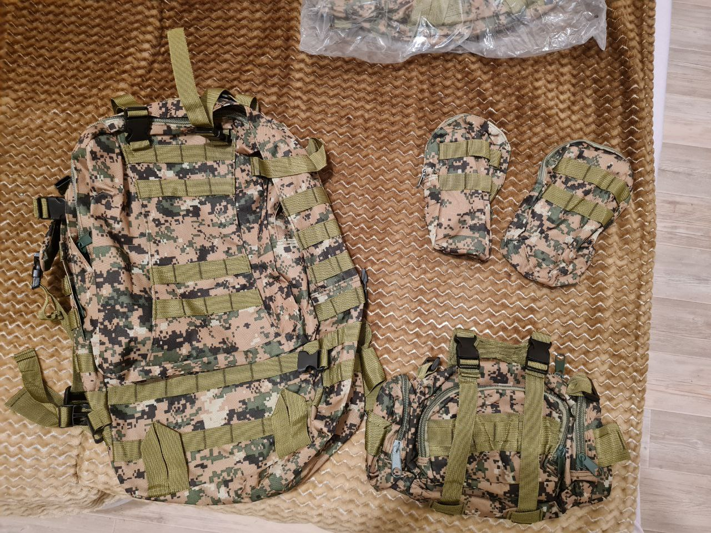
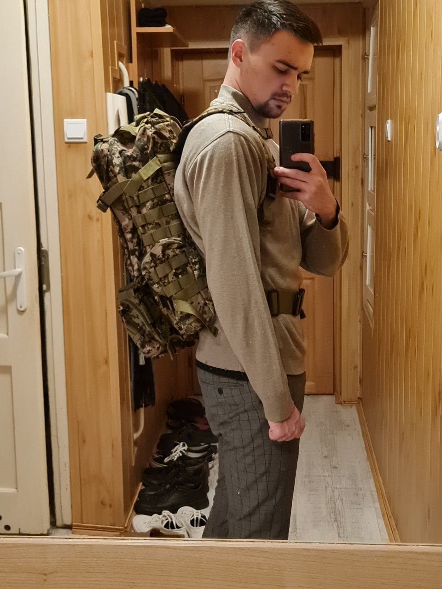
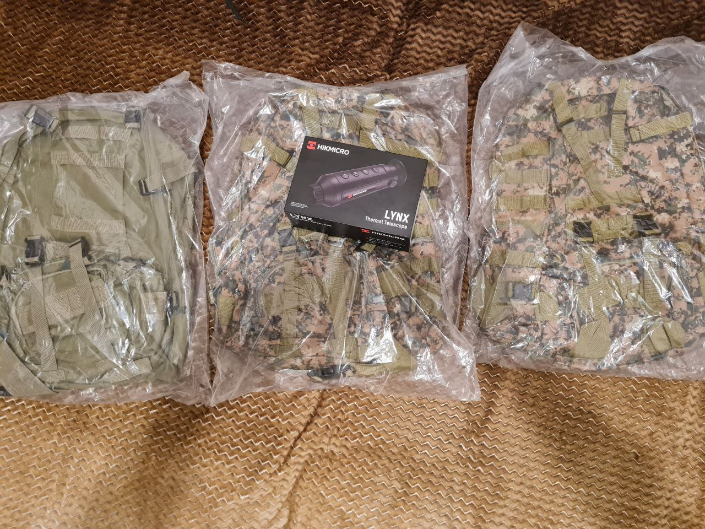
Оптика та каліматори:
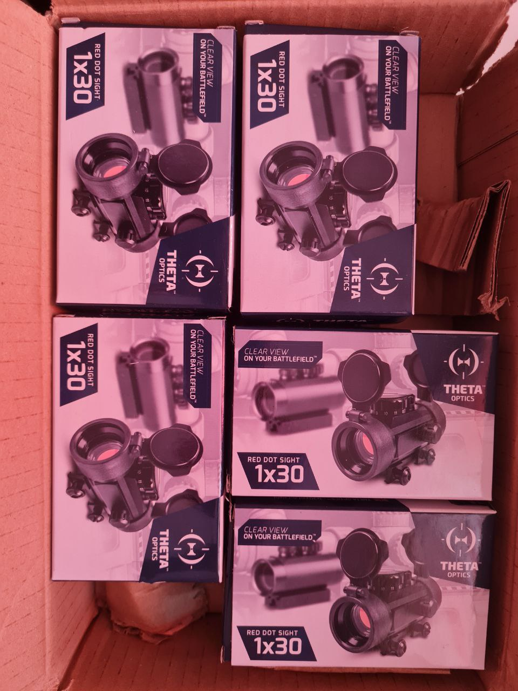
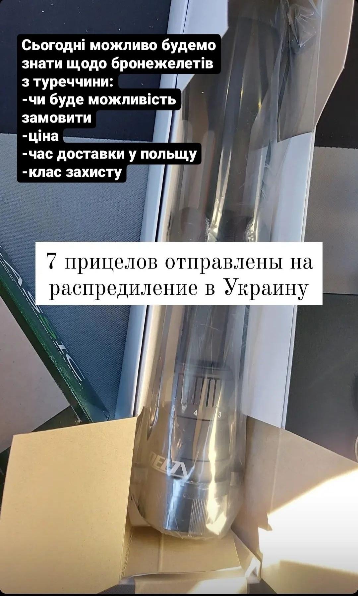
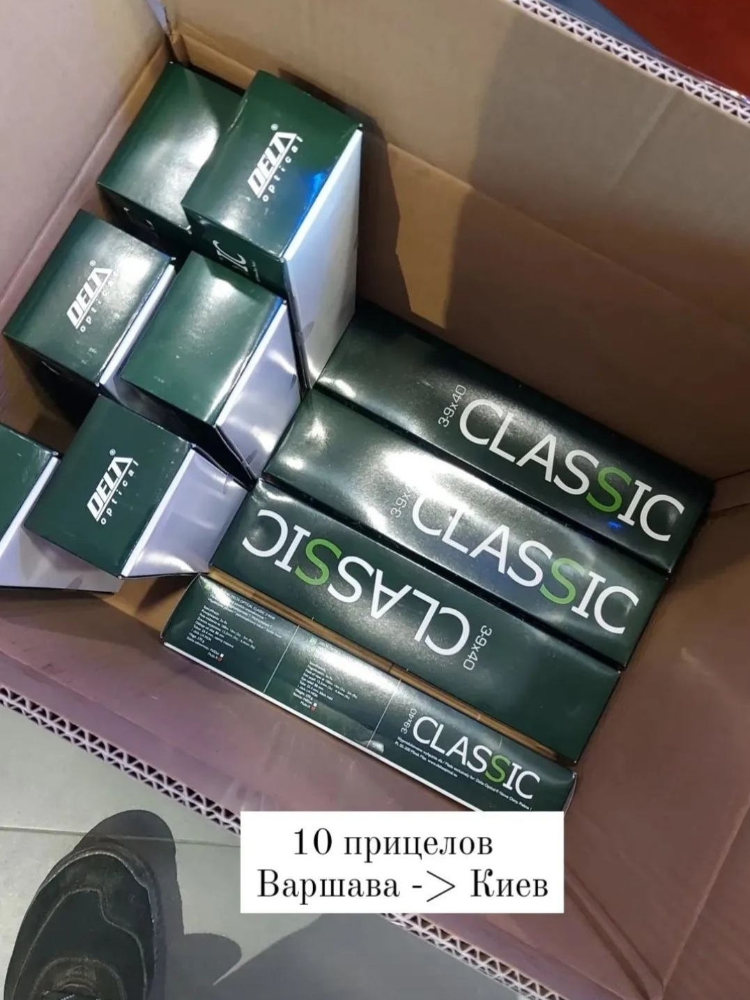
Та під кінець рації:
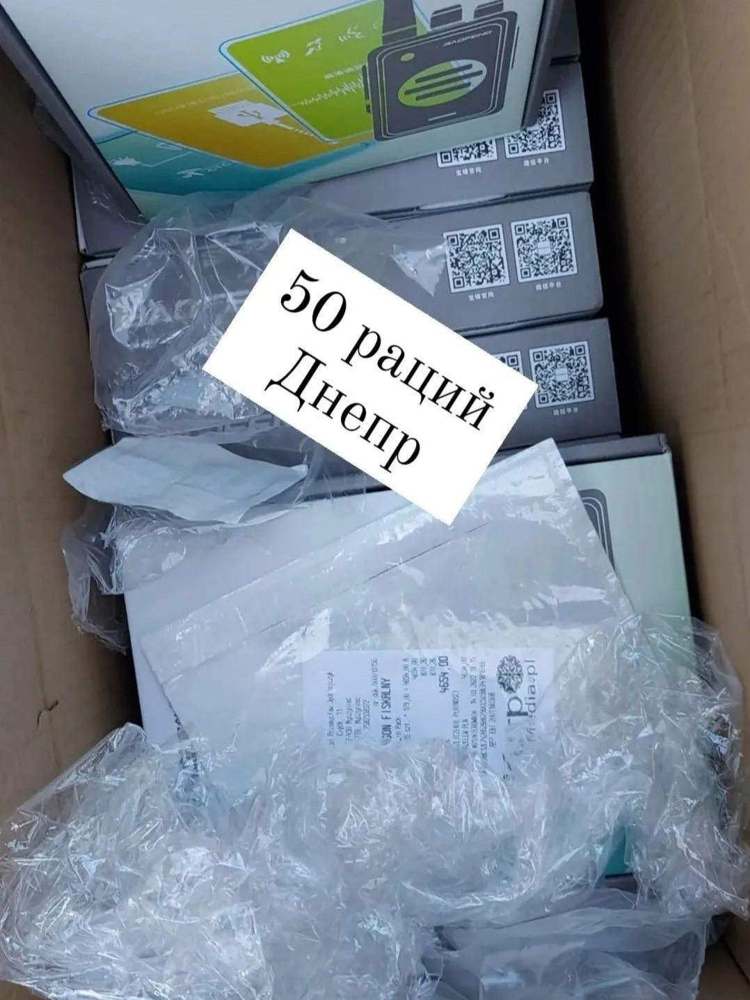
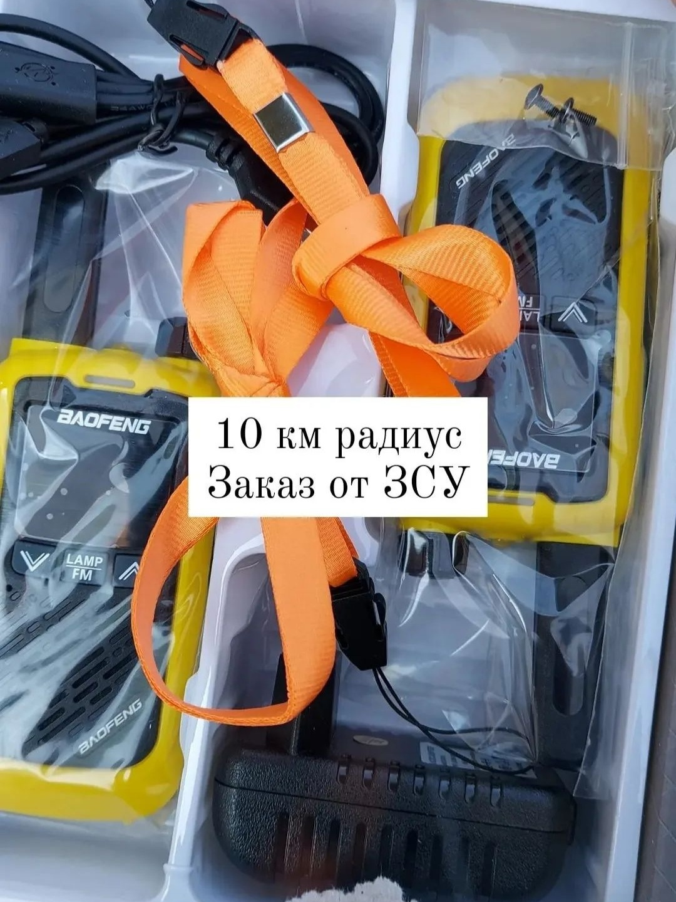
Також у нас є можливість закупити машину, заправити її (думаю можу і за свій кошт, якщо лишні гроші
нашкрябуться), та доставити її куди потрібно, зв'язків вже хватає, можливо скоро і я (Баглай Владислав)
власноруч зможу доправити машину куди потрібно буде.
Ця робота представленя для того, аби пан Євгеній при потребі знав, що один із учеників осіннього курсу
також волонтерить та радий буде відкликнутись та допомогти нашим ЗСУ.